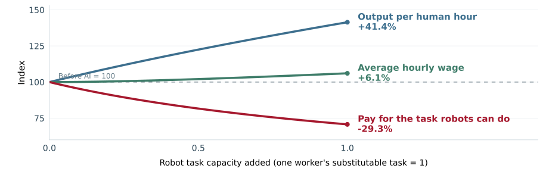

ECON 342 · Week 8 · Study version
Who gains and who loses from trade?
Heckscher–Ohlin links endowments to trade patterns. Stolper–Samuelson links product-price changes to the real incomes of factor owners.
Predict: connect endowments to export patterns.
Compute: trace a product-price shock into factor prices.
Test: separate H–O predictions from adjustment evidence.
Evaluate: connect adjustment costs to policy demands.
Twenty-one short slides · three interactive explorers · Canadian evidence
Why H–O matters: from trade patterns to people
Beyond Ricardo
Ricardo shows why countries can gain from comparative advantage, but treats productivity differences as given.
H–O supplies a source: differences in relative factor endowments can create comparative advantage.
Beyond national gains
People own factors. Stolper–Samuelson traces a change in goods prices into potential winners and losers through their factor incomes.
Ask: which factor does the export good use intensively, and who owns it?
Mental model: endowments → relative factor costs → comparative advantage → trade-induced goods prices → factor incomes.
Canada’s export basket reflects land, resources, skills—and more
This pattern is consistent with an endowment story. The chart alone does not prove its cause.
Source: Author’s calculation from UN Comtrade, HS chapters, merchandise exports to the world, 2023.
Do not confuse abundance with intensity
Country ratio
Canada is relatively land abundant. Compare factor supplies across countries.
Good ratio
Grain is relatively land intensive. Compare production requirements across goods.
H–O prediction: a country tends to export the good that uses its relatively abundant factor intensively.
Check yourself: why does “Canada has many workers” fail to establish labour abundance?
Heckscher–Ohlin in plain English
Why endowments can shape trade
- Countries differ in their relative supplies of land, labour, capital, resources, and skills.
- A relatively plentiful factor usually has a lower relative price.
- Goods use factors in different proportions. Goods that intensively use the abundant factor tend to have a lower relative cost.
- The country tends to export those goods and import goods that intensively use its scarce factors.
Canada example
Canada has abundant land and natural-resource assets relative to its population. H–O therefore predicts relatively strong exports of cereals, lumber, fertilizers, ores, and energy.
Income extension: people own factors. When trade raises the export good’s relative price, the return to its intensive factor tends to rise. Stolper–Samuelson formalizes that long-run income effect.
Technology, scale, geography, firms, institutions, and trade costs explain why the fit is not exact.
Check yourself: which factor is abundant, which good uses it intensively, and what trade pattern follows?
Relative land abundance changes the output mix
Hold labour at 60 and the partner at T/L = 1. Move the home economy’s land per worker.
Thin marker = partner output. Stylized model, not a Canada–Korea forecast.
Teaching coefficients
Grain uses 4 land and 2 labour per unit. Apparel uses 1 land and 2 labour.
QA = 40 − 20(T/L)
Rybczynski at fixed prices: Compared with the partner, grain output is 7 units lower and apparel output is 7 units higher.
H–O trade direction: The home economy is relatively labour abundant, so it exports apparel and imports grain.Demand and trade costs determine volume.
Canada and South Korea: a sharp endowment contrast
Relative land abundance, 2024
Canada had roughly 37 times as much arable land per person.
What Canada traded with Korea, 2025
68.4% of Canadian exports to Korea were resource- and land-linked groups.
71.8% of Canadian imports from Korea were vehicles, machinery, and electronics.
H–O reading: Canada’s land and resource abundance contrasts with Korea’s capital- and technology-intensive manufacturing base.
Evidence standard: this pattern is consistent with H–O, not proof. Technology, scale, policy, firms, supply chains, and trade costs also shape trade.
Sources: World Bank, arable land per person; author’s grouping of Statistics Canada Table 12-10-0171-01.
Openness changes factor incomes and inequality
Closed prices are pG = pA = 6. Openness moves pG toward 8. Moving left shows the relative-price direction of an apparel tariff.
From closed: rent +66.7%; wage −33.3%.
Worker purchasing power: 0.167 grain or 0.222 apparel.
Distributional pressure: One land unit earns 2.50 times one labour unit. Concentrated land ownership can widen household inequality.
Toy household comparison. This is not a Gini coefficient or a Canadian forecast.
Stolper–Samuelson connects trade policy to inequality pressure
More openness
The land-intensive export price rises
Land rent rises while the wage falls in terms of both goods. If land ownership is concentrated, the factor-income gap can widen household inequality.
Tariff on labour-intensive apparel
The domestic apparel price rises
The wage rises and land rent falls in this model. The factor-income gap can narrow, but consumers pay more for apparel.
Magnification: the intensive factor’s return changes proportionally more than the product price that moved.
Do not jump from factor prices to a Gini: household inequality also depends on factor ownership and policy redistribution. Tariff revenue, retaliation, and efficiency costs lie outside this experiment.
Use one H–O chain to answer four questions
| Question | H–O / Stolper–Samuelson logic | Canadian application |
|---|---|---|
| Trade pattern | Relative abundance × factor intensity | Why Canada exports land- and resource-intensive goods |
| Goods-price shock | Identify the factor used intensively in the good | Which return rises or falls |
| Distribution | Map factor returns to ownership and consumption | Who gains or loses in real terms |
| Evidence check | Test assumptions and competing forces | Technology, input links, trade costs, and slow adjustment |
Exam rule: H–O predicts the trade pattern; Stolper–Samuelson predicts factor-income incidence.
Use H–O for a prediction, then test what it omits
Directional prediction
Trace the relative goods price
A higher price for land-intensive grain raises land rent. A tariff that raises the price of labour-intensive apparel raises the wage in the toy model. The other factor’s real return moves in the opposite direction.
Evidence check
Do not stop at the model
Measure ownership, consumption, input linkages, mobility, tariff revenue, retaliation, and efficiency costs. Slow adjustment is evidence to document, not a second formal model in this week.
Policy rule: a factor-income prediction is not yet a complete tariff cost–benefit analysis.
Canadian trade liberalization brought both disruption and productivity growth
The effects are estimated for highly exposed groups—not all manufacturing.
Source: Daniel Trefler, The Long and Short of the Canada–U.S. Free Trade Agreement.
Recent employment losses were concentrated in exposed industries
Descriptive exposure evidence is not automatically a causal tariff estimate.
Source: Statistics Canada, Employment changes amid trade uncertainty.
AI changes which human tasks remain scarce
The H–O connection
Relative factor supplies and production techniques shape comparative advantage. AI and robots change the tasks machines can perform, so demand for different human capabilities changes.
Canadian export thought experiment: an auto plant uses fewer assembly hours per vehicle and expands exports. Maintenance and engineering can gain while some assembly tasks contract.
Three forces affect labour demand
- Replacement: machines perform some human tasks.
- Complementarity: machines make other human tasks more productive.
- Expansion: lower costs can increase sales and exports.
Wages depend on the balance of these forces and on adjustment and institutions.
Model boundary: this is a technology extension. Stolper–Samuelson describes goods-price changes with technology fixed. More capital need not change wages in the diversified textbook economy at fixed world prices.
Task framework: Acemoglu and Restrepo, Automation and New Tasks (2019). The auto example is a thought experiment.
Productivity can rise while some wages fall

One unit can perform one worker's substitutable task. The vertical guide marks your selection.
Why the gap? Robots add output but reduce the marginal contribution of the task they can replace. The other human task becomes more productive. Part of the extra income pays for robot services.
Assumptions, equations and downloadable data
Y = 2√[H(L + R)], with H = L = 1, unchanged human hours and output price, and payments equal to marginal products. The complementary task earns √(1 + R); the substitutable task earns 1/√(1 + R). Average pay is their mean. Task reassignment, new tasks and retraining are outside this illustration.
Model explanation and sources · Download model CSV · Assumptions JSON
Illustration, not Canadian estimates or a forecast. Output price stays fixed, so the wage changes also change purchasing power.
Canadian robot adopters expand, but workers differ
Bank of Canada, September 2026
Robot adoption in Canadian private corporations is associated with higher revenue, value added, non-owner employment and payroll.
The study finds little evidence of a lower labour share and no increase in the total owner income share. The falling-share outcome in the illustration is not universal.
Statistics Canada, historical evidence
Robot adopters tended to hire more workers overall but needed fewer managers. Middle-skilled workers faced weaker outcomes than high- and low-skilled workers.
Payroll = total hours × average hourly pay. Higher payroll does not establish that every worker earns more.
Interpret: what worker-level evidence would you need before claiming that automation raised everyone's living standard?
Sources: Galassi and MacKenzie, Bank of Canada WP 2026-34; Statistics Canada, Dixon (2020). Firm growth alone does not identify economy-wide job effects.
Small losses per consumer can coexist with large stakes per producer
Consumers
A small annual cost per consumer is diffuse and hard to organize around.
Protected producers
A large benefit per worker or owner is visible and worth organizing to defend.
Political-economy mechanism: concentrated stakes produce stronger organization, information, and pressure than diffuse stakes.
Important: this explains why support can arise. It does not prove every protective policy is inefficient or every concern is illegitimate.
Most Canadians viewed growing protectionism as bad in 2021
Support for openness at the national level can coexist with concern about local job loss, bargaining power, resilience, or fairness.
Source: Global Affairs Canada public-opinion research, February 2021 report, n = 2,043.
Target the adjustment problem directly
| Diagnosed problem | Targeted response | Why not a broad barrier? |
|---|---|---|
| Temporary income loss | Time-limited income or wage insurance | A barrier raises costs for many buyers |
| Skills mismatch | Training tied to real employer demand | Protection does not create portable skills |
| Geographic immobility | Mobility, housing, and local transition support | A national barrier poorly targets one place |
| Firm financing constraint | Conditional transition finance | Blanket protection can preserve weak incentives |
Design rule: openness is more likely to remain politically durable when credible adjustment policy targets the problem while preserving gains from exchange.
Use this five-step recipe on any trade shock
Name the shock
Product price, trade cost, demand, technology, or policy?
Choose horizon
How quickly can factors and households adjust?
Map incidence
Who owns the expanding and contracting factors?
Test evidence
Separate aggregate, sectoral, regional, and worker outcomes.
Match policy
Target the diagnosed market or adjustment failure.
Write precisely: “The model predicts…” and “The evidence is consistent with…” are not the same claim.
What you should be able to do
Explain H–O
Relative abundance → relative cost → specialization → trade.
Compute distribution
A product-price change can raise one factor’s real return and lower another’s.
Test adjustment
Compare the H–O benchmark with sector, region, and worker evidence.
Read evidence
Trade and AI can raise productivity while workers experience different wage and employment outcomes.
Explain politics
Large, visible, concentrated stakes organize more easily than diffuse stakes.
Evaluate policy
Target adjustment failures while preserving gains from exchange where possible.
One sentence: trade can enlarge the national pie while changing relative prices in ways that create identifiable winners and losers.